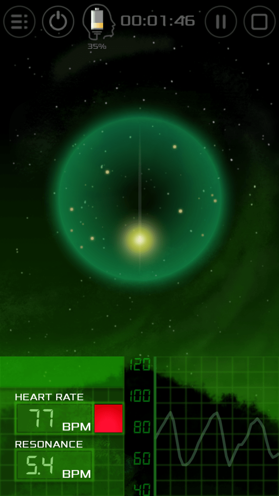

Biofeedback breath pacer for healtheir life.
| REDUCES ANXIETY AND DEPRESSION | |
| PROMOTES RELAXATION | |
| INCREASES FOCUS | |
| RELIEVES STRESS |
| REDUCES ANXIETY AND DEPRESSION | |
| PROMOTES RELAXATION | |
| INCREASES FOCUS | |
| RELIEVES STRESS |
Biofeedback breathing was shown by studies to help with conditions ranging from anxiety and depression to PTSD.
Practice for just a couple of minutes to relieve the pressures of the day and regain your energy.
Take a moment to clear your mind and regian concentration for optimal perfomance.
Breathmix can listen to your heart rate to adjust the breathing pattern especialy for you. It will synchronize your heart rate and your breathing to reach a state of coherence.
Define your custom breathing pattern ratios (hold, inhale, exhale and rest) and easily adjust the breathing tempo during the breathing session.
Choose a relaxing guide sounds and ambient atmosphere track to set you in the right mood for relaxation.
"Great app truely helpfull"
"great instrument to help me during stressful days"
"Very relaxing"